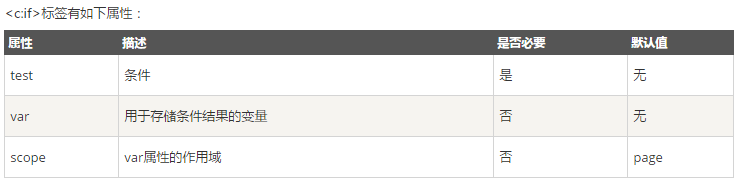
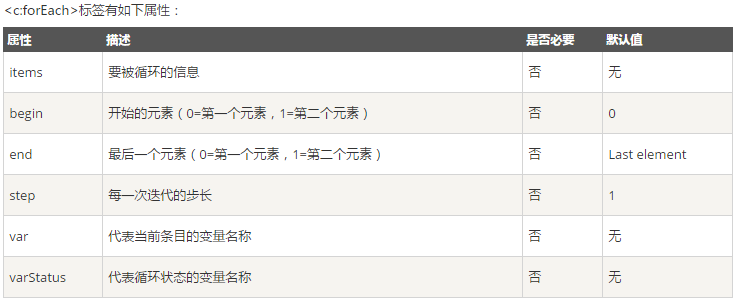
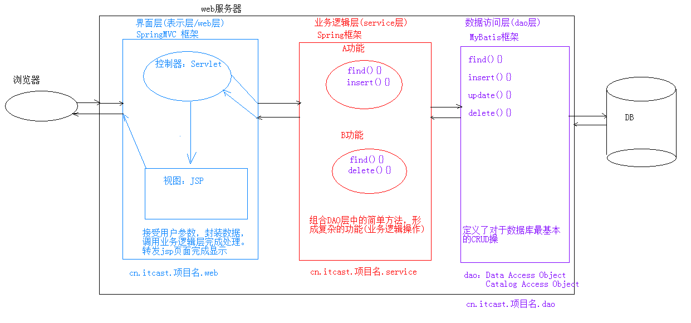
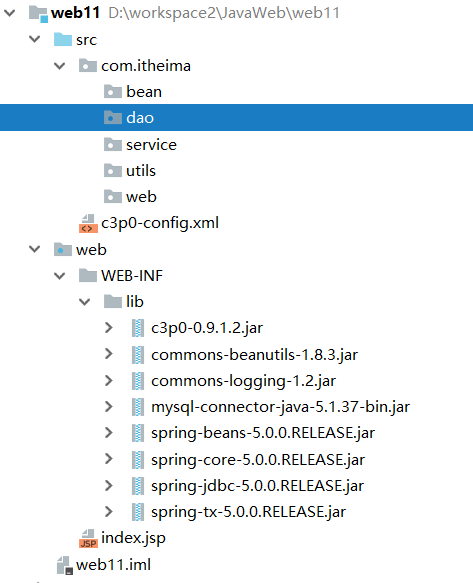
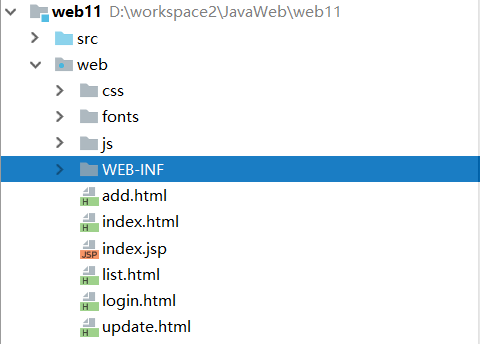
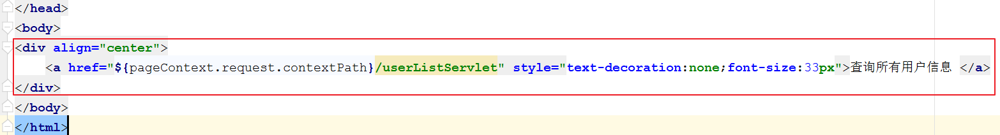

05-EL与JSTL一. 今日目标二. 今日内容(一) JSP技术1. JSP指令page指令include指令taglib指令常用属性2. JSP注释3. JSP内置对象4. MVC开发模式介绍jsp演变历史MVC概念介绍优缺点(二) EL表达式1. EL概述2. EL获取数据EL获取字符串数据EL获取数组和List集合中的数据EL获取Map集合中的数据EL获取对象属性EL获取集合中的对象属性EL获取对象的集合属性3. 执行运算执行算术运算执行关系运算执行逻辑运算执行三元运算执行empty运算4. 内置对象(三) JSTL标签库1. JSTL概述2. 使用步骤3. 常用的JSTL标签if 标签choose标签foreach标签4. JSTL练习需求介绍代码实现创建User对象代码实现(四) 三层架构1. 表现层2. 业务层3. 数据访问层(五) 案例:用户信息列表展示1. 需求2. 分析3. 环境搭建数据库环境项目环境页面资源4. 代码实现创建JdbcUtils工具类编写数据层接口UserDao实现类UserDaoImpl编写业务层接口UserService实现类UserServiceImpl编写web层修改页面用户列表页面List.jsp首页添加超链接
05-EL与JSTL
一. 今日目标
- 能够说出jsp的优势
- 能够编写jsp代码片段、声明、脚本表达式
- 能够说出el表达式的作用
- 能够使用el表达式获取javabean的属性
- 能够使用jstl标签库的if标签
- 能够使用jstl标签库的foreach标签
- 能够使用jstl标签库的choose标签
- 能够说出开发模式的作用
- 能够使用三层架构模式完成显示用户案例
二. 今日内容
(一) JSP技术
1. JSP指令
作用 : 用于配置JSP页面，导入资源文件
格式 :
<%@ 指令名称 属性名1=属性值1 属性名2=属性值2 ... %>
page指令
page指令具有如下属性:* contentType:等同于response.setContentType()1. 设置响应体的mime类型以及字符集2. 设置当前jsp页面的编码（只能是高级的IDE才能生效，如果使用低级工具，则需要设置pageEncoding属性设置当前页面的字符集）* import:导包* errorPage:当前页面发生异常后，会自动跳转到指定的错误页面* isErrorPage:标识当前也是是否是错误页面。* true:是，可以使用内置对象exception* false:否。默认值。不可以使用内置对象exception
include指令
作用 : 在JSP页面中静态包含一个文件，同时由该JSP解析包含的文件内容。
格式 :
<%@ include 属性名=属性值%>
例如 : <%@ include file="/demo/logo.jsp" %>
常用属性
| 属性名 | 属性说明 |
|---|---|
| file | 指示JSP页面包含页面路径。 |
注意事项：
应该将被包含的页面的结构去掉。
在被包含的页面中定义变量，在包含的页面中还可以使用。
taglib指令
作用 : 导入资源(熟悉)
格式 :
<%@ taglib 属性名=属性值%>
示例 : <%@ taglib prefix="c" uri="http://java.sun.com/jsp/jstl/core" %>
常用属性
| 属性名 | 属性说明 |
|---|---|
| uri | 引入的标签库的路径。 |
| prefix | 引入标签库的别名。 |
2. JSP注释
xxxxxxxxxxhtml注释<!-- --> : 只能注释html代码片段jsp注释<%-- --%>:可以注释所有
3. JSP内置对象
在jsp页面中不需要创建，直接使用的对象,九大内置对象及其类型如下
| 属性名 | 真实类型 | 属性说明 |
|---|---|---|
| request | HttpServletRequest | 从客户端向服务器发送的请求对象 |
| response | HttpServletResponse | 从服务器端向客户端作出响应对象 |
| session | HttpSession | 服务器为客户端创建会话对象 |
| application | ServletContext | 代表应用。获得的ServletContext对象。 |
| out | JspWriter | 向输出流写入内容的对象。 |
| page | Object | 当前的JSP翻译成Servlet后的对象的引用。 |
| pageContext | PageContext | 本JSP的页面的上下文对象。 |
| config | ServletConfig | 本JSP的ServletConfig对象。 |
| exception | Throwable | 表示JSP页面运行时产生的异常对象。 |
4. MVC开发模式介绍
jsp演变历史
xxxxxxxxxx1. 早期只有servlet，只能使用response输出标签数据，非常麻烦2. 后来又jsp，简化了Servlet的开发，如果过度使用jsp，在jsp中即写大量的java代码，有写html表，造成难于维护，难于分工协作3. 再后来，java的web开发，借鉴mvc开发模式，使得程序的设计更加合理性
MVC概念介绍
xxxxxxxxxx1. M:Model，模型。JavaBean* 完成具体的业务操作，如:查询数据库，封装对象2. V:View，视图。JSP* 展示数据3. C:Controller，控制器。Servlet* 获取用户的输入* 调用模型* 将数据交给视图进行展示
优缺点
x1. 优点:1. 耦合性低，方便维护，可以利于分工协作2. 重用性高2. 缺点:1. 使得项目架构变得复杂，对开发人员要求高
(二) EL表达式
1. EL概述
什么是EL表达式?
EL（Expression Language） 是为了使JSP写起来更加简单。表达式语言的灵感来自于 ECMAScript 和 XPath 表达式语言，它提供了在 JSP 中简化表达式的方法，让Jsp的代码更加简化。
为什么要学习EL表达式?
EL和JSTL一起使用取代JSP页面中嵌入Java代码写法。
EL表达式常用功能
- EL获取数据
- EL执行运算
- EL获取web开发常用的对象
EL表达式的基本语法
xxxxxxxxxx${EL表达式}
2. EL获取数据
EL表达式语句在执行的时候， 分别从page、request、session、application范围查找相应对象，找到就会返回相应对象，找不到返回””(不是null，是空的字符串)。
EL所获取的数据需要在四个作用范围中。
| 域名称 | 域对象 | 域对象类型 |
|---|---|---|
| pageScope | pageContext | PageContext |
| requestScope | request | ServletRequest |
| sessionScope | session | HttpSession |
| applicationScope | application | ServletContext |
xxxxxxxxxx使用EL获取数据时会调用域对象的`getAttribute("键名称")`方法进行获取例如: `${requestScope.user } ` 底层的执行代码为 `request.getAttribute("user")`;如果省略域范围,那么会从小范围到大范围依次的进行查找,找到之后返回
EL获取字符串数据
xxxxxxxxxx<h3>通过EL表达式获取域对象中的数据</h3><% //pageContext.setAttribute("msg", "PAGE_SCOPE"); request.setAttribute("msg", "REQUEST_SCOP"); session.setAttribute("msg", "SESSION_SCOP"); application.setAttribute("msg", "APPLICATION_SCOPE");%><h3><%=pageContext.getAttribute("msg") %>|${pageScope.msg}</h3><h3><%=request.getAttribute("msg") %>|${requestScope.msg}</h3><h3><%=session.getAttribute("msg") %>|${sessionScope.msg}</h3><h3><%=application.getAttribute("msg") %>|${applicationScope.msg}</h3><!-- EL表达式的简写 -->${msg }EL获取数组和List集合中的数据
xxxxxxxxxx<h4>--EL表达式如何获取数组中的数据</h4><% String[] msgs={"龚老汉","老谈","山鸡哥"}; //存到pageContext域中 pageContext.setAttribute("msgs", msgs);%>${ msgs[0] }${ msgs[1] }${ msgs[2] }<h4>--EL表达式如何获取list集合中的数据</h4><% List<String> lists=new ArrayList<String>(); lists.add("aaa"); lists.add("bbb"); lists.add("ccc"); //存到pageContext域中 pageContext.setAttribute("list", lists);%>${ list[0] }--${ list[1] }--${ list[2] }EL获取Map集合中的数据
xxxxxxxxxx<h4>--EL表达式如何获取map集合中的数据</h4><% /*注意:1、map集合的键要是String类型 */ Map<String,String> map=new HashMap<String,String>(); map.put("1", "aaa"); map.put("two", "bbb"); map.put("three.cc", "ccc"); //存到pageContext域中 pageContext.setAttribute("map", map);%><!-- 注意2、当key中有特殊字符点时，map集合获取值就不能使用.了,使用下标的方式["key"] -->${ map['1'] }${ pageScope.map["two"] }${ map["three.cc"] }EL获取对象属性
xxxxxxxxxx<h4>--EL表达式如何获取对象属性</h4><% User user = new User(); user.setUsername("关晓彤"); user.setPassword("123"); pageContext.setAttribute("u", user);%>${u.username }----${u.password }EL获取集合中的对象属性
xxxxxxxxxx<h4>--EL表达式如何集合中的对象属性</h4><% List<User> list = new ArrayList<User>(); User user1 = new User(); user1.setUsername("鹿晗"); user1.setPassword("456"); User user2 = new User(); user2.setUsername("baby"); user2.setPassword("789"); User user3 = new User(); user3.setUsername("黄晓明"); user3.setPassword("111"); list.add(user1); list.add(user2); list.add(user3); pageContext.setAttribute("users", list);%>${users[0].username }--${users[0].password }<br/>${users[1].username }--${users[1].password }<br/>${users[2].username }--${users[2].password }EL获取对象的集合属性
xxxxxxxxxx<h4>--EL表达式如何获取对象的集合属性</h4><% User user4 = new User(); user4.setUsername("黄晓明"); user4.setPassword("111"); List<String> hs = new ArrayList<String>(); hs.add("看电影"); hs.add("写代码"); hs.add("约会"); user4.setHobbys(hs); pageContext.setAttribute("user", user4);%>${user.username }---${user.password }---${user.hobbys[0] }---${user.hobbys[1] }---${user.hobbys[2] }3. 执行运算
执行算术运算
xxxxxxxxxx<% pageContext.setAttribute("m", "10"); pageContext.setAttribute("n", 20);%><h4>--EL执行算术运算</h4>${m+n }<!-- 结果:30 --><!-- 在进行算术运算的时候会自动格式化我们数字类型的字符串 -->执行关系运算
xxxxxxxxxx<h4>--EL执行关系运算</h4>${m>n }--gt-->${m gt n }<br>${m<n }--lt-->${m lt n }<br>${m==n }--eq-->${m eq n }<br>${m>=n }--ge-->${m ge n }<br>${m<=n }--le-->${m le n }<br>${m!=n }--ne-->${m ne n }执行逻辑运算
xxxxxxxxxx<h4>--EL执行逻辑运算</h4>${m<20 && n>10 } --and-->${m < 20 and n > 10 } --and-->${m lt 20 and n gt 10 }执行三元运算
xxxxxxxxxx<h4>--EL执行三目运算</h4>${m < n ?m:n }<!-- 当m < n 为true时，输出m的值，否则输出n的值 -->执行empty运算
xxxxxxxxxx<%User user = new User();pageContext.setAttribute("user", user);%><h4>--EL判断对象是否为空</h4>${ empty user}===>${ not empty user}<br><h4>--EL判断集合是否为空</h4><% List<String> list = new ArrayList<String>(); list.add("111"); pageContext.setAttribute("list", list);%>${ empty list}===>${ not empty list}<br><h4>--EL判断Map集合是否为空</h4><% Map<String,String> map = new HashMap<String,String>(); pageContext.setAttribute("map", map);%>${ empty map}===>${ not empty map}<br>注意:使用el表达式的empty运算判断集合是否为null时,如果集合对象本身不为null,但是集合中没有数据,这个时候也会返回true
4. 内置对象
EL表达式定义了11个web开发常用对象。
使用这些对象可以很方便获取web开发冲的一些常见对象，并可以读取这些对象中的数据。
| 对象名称 | 描述 |
|---|---|
| pageContext | 相当于JSP内置对象中pageContext |
| pageScope | 获取指定域下的名称的数据 |
| requestScope | 获取指定域下的名称的数据 |
| sessionScope | 获取指定域下的名称的数据 |
| applicationScope | 获取指定域下的名称的数据 |
| param | 在页面中接收请求参数（接收一个名称对应一个值参数）。 |
| paramValues | 在页面中接收请求参数（接收一个名称对应多个值参数）。 |
| header | 在页面上获取请求头（获取一个key对应一个value 头） |
| headerValues | 在页面上获取请求头（获取一个key对应多个value 头） |
| cookie | 访问cookie的名称和值（${cookie.key.name} ${cookie.key.value}） |
| initParam | 获取全局初始化参数的值 |
(三) JSTL标签库
1. JSTL概述
xxxxxxxxxx1. 什么是JSTL?JSTL（JavaServer Pages Standard Tag Library，JSP标准标签库)是一个不断完善的开放源代码的JSP标签库，是由apache的jakarta小组来维护的。JSTL只能运行在支持JSP1.2和Servlet2.3规范的容器上，。2. 为什么学习JSTL?主要和EL来取代传统页面上直接嵌入Java代码写法。提升程序可读性、维护性和方便性。
2. 使用步骤
xxxxxxxxxx1. 导入jstl相关jar包2. 引入标签库:taglib指令: <%@ taglib %>3. 使用标签
3. 常用的JSTL标签
if 标签
属性

示例
xxxxxxxxxx<%@ page import="java.util.List" %><%@ page import="java.util.ArrayList" %><%@ page contentType="text/html;charset=UTF-8" language="java" %><%@ taglib prefix="c" uri="http://java.sun.com/jsp/jstl/core" %><html><head> <title>if标签</title></head><body> <c:if test="true"> <h1>我是真...</h1> </c:if> <br> <% //判断request域中的一个list集合是否为空，如果不为null则显示遍历集合 List list = new ArrayList(); list.add("aaaa"); request.setAttribute("list",list); request.setAttribute("number",4); %> <c:if test="${not empty list}"> 遍历集合... </c:if> <br> <c:if test="${number % 2 != 0}"> ${number}为奇数 </c:if> <c:if test="${number % 2 == 0}"> ${number}为偶数 </c:if></body></html>注意: c:if标签没有else情况，想要else情况，则可以在定义一个c:if标签
choose标签
xxxxxxxxxx<%@ page contentType="text/html;charset=UTF-8" language="java" %><%@taglib prefix="c" uri="http://java.sun.com/jsp/jstl/core" %><html><head> <title>choose标签</title></head><body> <%-- 完成数字编号对应星期几案例 1.域中存储一数字 2.使用choose标签取出数字 相当于switch声明 3.使用when标签做数字判断 相当于case 4.otherwise标签做其他情况的声明 相当于default --%> <% request.setAttribute("number",51); %> <c:choose> <c:when test="${number == 1}">星期一</c:when> <c:when test="${number == 2}">星期二</c:when> <c:when test="${number == 3}">星期三</c:when> <c:when test="${number == 4}">星期四</c:when> <c:when test="${number == 5}">星期五</c:when> <c:when test="${number == 6}">星期六</c:when> <c:when test="${number == 7}">星期天</c:when> <c:otherwise>数字输入有误</c:otherwise> </c:choose></body></html>foreach标签
属性

示例
xxxxxxxxxx<%@ page import="java.util.ArrayList" %><%@ page import="java.util.List" %><%@ page contentType="text/html;charset=UTF-8" language="java" %><%@taglib prefix="c" uri="http://java.sun.com/jsp/jstl/core" %><html><head> <title>foreach标签</title></head><body><c:forEach begin="1" end="10" var="i" step="2" varStatus="s"> ${i} <h3>${s.index}<h3> <h4> ${s.count} </h4><br></c:forEach> <hr> <% List list = new ArrayList(); list.add("aaa"); list.add("bbb"); list.add("ccc"); request.setAttribute("list",list); %> <c:forEach items="${list}" var="str" varStatus="s"> ${s.index} ${s.count} ${str}<br> </c:forEach></body></html>4. JSTL练习
需求介绍
xxxxxxxxxx在request域中有一个存有User对象的List集合。需要使用jstl+el将list集合数据展示到jsp页面的表格table中
代码实现
创建User对象
xxxxxxxxxxpackage cn.itcast.domain;import java.text.SimpleDateFormat;import java.util.Date;public class User { private String name; private int age; private Date birthday; public User(String name, int age, Date birthday) { this.name = name; this.age = age; this.birthday = birthday; } public User() { } /** * 逻辑视图 * @return */ public String getBirStr(){ if(birthday != null){ //1.格式化日期对象 SimpleDateFormat sdf = new SimpleDateFormat("yyyy-MM-dd HH:mm:ss"); //2.返回字符串即可 return sdf.format(birthday); }else{ return ""; } } public String getName() { return name; } public void setName(String name) { this.name = name; } public int getAge() { return age; } public void setAge(int age) { this.age = age; } public Date getBirthday() { return birthday; } public void setBirthday(Date birthday) { this.birthday = birthday; }}代码实现
xxxxxxxxxx<%@ page import="cn.itcast.domain.User" %><%@ page import="java.util.List" %><%@ page import="java.util.ArrayList" %><%@ page import="java.util.Date" %><%@ page contentType="text/html;charset=UTF-8" language="java" %><%@taglib prefix="c" uri="http://java.sun.com/jsp/jstl/core" %><html><head> <title>test</title></head><body><% List list = new ArrayList(); list.add(new User("张三",23,new Date())); list.add(new User("李四",24,new Date())); list.add(new User("王五",25,new Date())); request.setAttribute("list",list);%><table border="1" width="500" align="center"> <tr> <th>编号</th> <th>姓名</th> <th>年龄</th> <th>生日</th> </tr> <%--数据行--%> <c:forEach items="${list}" var="user" varStatus="s"> <c:if test="${s.count % 2 != 0}"> <tr bgcolor="red"> <td>${s.count}</td> <td>${user.name}</td> <td>${user.age}</td> <td>${user.birStr}</td> </tr> </c:if> <c:if test="${s.count % 2 == 0}"> <tr bgcolor="green"> <td>${s.count}</td> <td>${user.name}</td> <td>${user.age}</td> <td>${user.birStr}</td> </tr> </c:if> </c:forEach></table></body></html>(四) 三层架构

1. 表现层
xxxxxxxxxx用户看的界面。用户可以通过界面上的组件和服务器进行交互
2. 业务层
xxxxxxxxxx处理业务逻辑的。
3. 数据访问层
xxxxxxxxxx操作数据存储文件
(五) 案例:用户信息列表展示
1. 需求

2. 分析

技术选型:Servlet+JSP+MySQL+JDBCTempleat+Duird+BeanUtilS+tomcat
3. 环境搭建
数据库环境
xxxxxxxxxxcreate database web17; -- 创建数据库use web17; -- 使用数据库create table user( -- 创建表 id int primary key auto_increment, name varchar(20) not null, gender varchar(5), age int, address varchar(32), qq varchar(20), email varchar(50));项目环境

页面资源

注意:修改list.html为list.jsp
4. 代码实现
创建JdbcUtils工具类
xxxxxxxxxx/** * jdbc操作的工具类 */public class JdbcUtils { private static DataSource dataSource = new ComboPooledDataSource(); /** * 获取连接 */ public static Connection getConnection() throws SQLException { return dataSource.getConnection(); } /** * 获取连接池 */ public static DataSource getDataSource(){ return dataSource ; }}编写数据层
接口UserDao
xxxxxxxxxxpackage cn.itcast.dao;import cn.itcast.domain.User;import java.util.List;/** * 用户操作的DAO */public interface UserDao { public List<User> findAll();}实现类UserDaoImpl
xxxxxxxxxxpackage cn.itcast.dao.impl;import cn.itcast.dao.UserDao;import cn.itcast.domain.User;import cn.itcast.util.JDBCUtils;import org.springframework.jdbc.core.BeanPropertyRowMapper;import org.springframework.jdbc.core.JdbcTemplate;import java.util.List;public class UserDaoImpl implements UserDao { private JdbcTemplate template = new JdbcTemplate(JDBCUtils.getDataSource()); public List<User> findAll() { //使用JDBC操作数据库... //1.定义sql String sql = "select * from user"; List<User> users = template.query(sql, new BeanPropertyRowMapper<User>(User.class)); return users; }}编写业务层
接口UserService
xxxxxxxxxxpackage cn.itcast.service;import cn.itcast.domain.User;import java.util.List;/** * 用户管理的业务接口 */public interface UserService { /** * 查询所有用户信息 * @return */ public List<User> findAll();}实现类UserServiceImpl
xxxxxxxxxxpackage cn.itcast.service.impl;import cn.itcast.dao.UserDao;import cn.itcast.dao.impl.UserDaoImpl;import cn.itcast.domain.User;import cn.itcast.service.UserService;import java.util.List;public class UserServiceImpl implements UserService { private UserDao dao = new UserDaoImpl(); public List<User> findAll() { //调用Dao完成查询 return dao.findAll(); }}编写web层
xxxxxxxxxxpackage cn.itcast.web.servlet;import cn.itcast.domain.User;import cn.itcast.service.UserService;import cn.itcast.service.impl.UserServiceImpl;import javax.servlet.ServletException;import javax.servlet.annotation.WebServlet;import javax.servlet.http.HttpServlet;import javax.servlet.http.HttpServletRequest;import javax.servlet.http.HttpServletResponse;import java.io.IOException;import java.util.List;("/userListServlet")public class UserListServlet extends HttpServlet { protected void doPost(HttpServletRequest request, HttpServletResponse response) throws ServletException, IOException { //1.调用UserService完成查询 UserService service = new UserServiceImpl(); List<User> users = service.findAll(); //2.将list存入request域 request.setAttribute("users",users); //3.转发到list.jsp request.getRequestDispatcher("/list.jsp").forward(request,response); } protected void doGet(HttpServletRequest request, HttpServletResponse response) throws ServletException, IOException { this.doPost(request, response); }}修改页面
用户列表页面List.jsp
xxxxxxxxxx<%@ page contentType="text/html;charset=UTF-8" language="java" %><%@taglib prefix="c" uri="http://java.sun.com/jsp/jstl/core" %><html lang="zh-CN"><head> <meta charset="utf-8"> <meta http-equiv="X-UA-Compatible" content="IE=edge"> <meta name="viewport" content="width=device-width, initial-scale=1"> <title>用户信息管理系统</title> <link href="css/bootstrap.min.css" rel="stylesheet"> <script src="js/jquery-2.1.0.min.js"></script> <script src="js/bootstrap.min.js"></script> <style type="text/css"> td, th { text-align: center; } </style></head><body><div class="container"> <h3 style="text-align: center">用户信息列表</h3> <table border="1" class="table table-bordered table-hover"> <tr class="success"> <th>编号</th> <th>姓名</th> <th>性别</th> <th>年龄</th> <th>籍贯</th> <th>QQ</th> <th>邮箱</th> <th>操作</th> </tr> <c:forEach items="${users}" var="user" varStatus="s"> <tr> <td>${s.count}</td> <td>${user.name}</td> <td>${user.gender}</td> <td>${user.age}</td> <td>${user.address}</td> <td>${user.qq}</td> <td>${user.email}</td> <td><a class="btn btn-default btn-sm" href="update.html">修改</a> <a class="btn btn-default btn-sm" href="">删除</a></td> </tr> </c:forEach> <tr> <td colspan="8" align="center"><a class="btn btn-primary" href="add.html">添加联系人</a></td> </tr> </table></div></body></html>首页添加超链接
